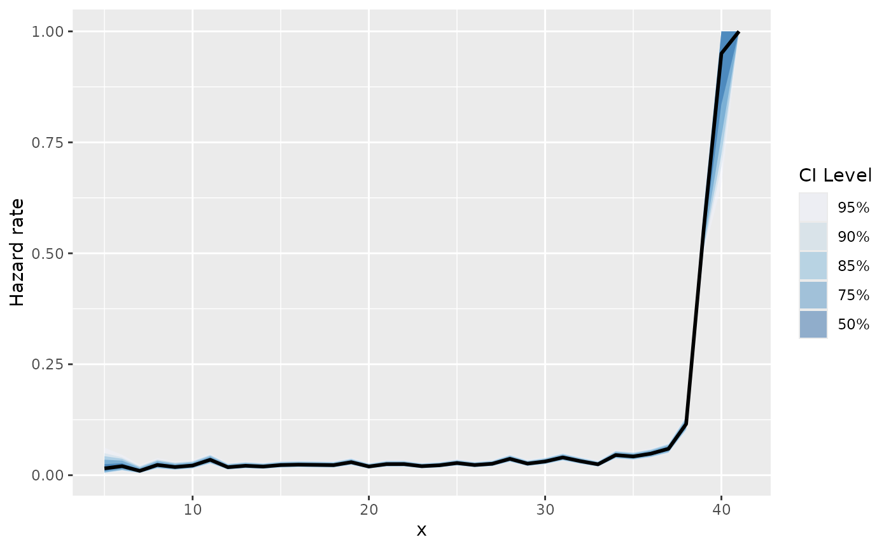
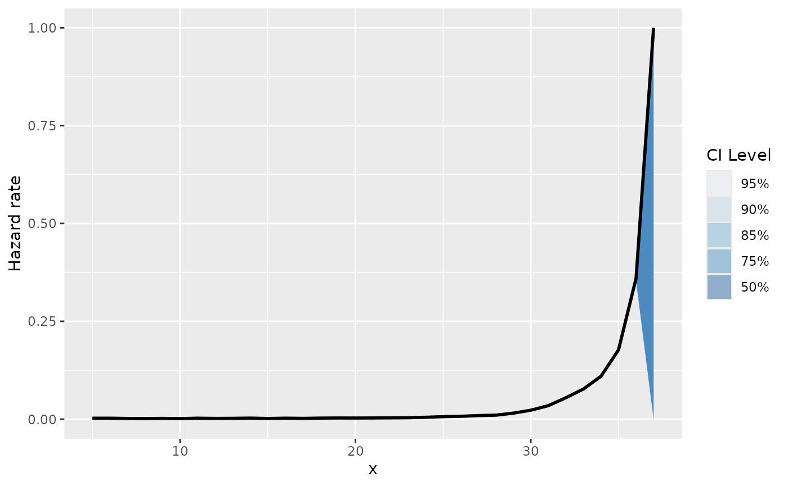
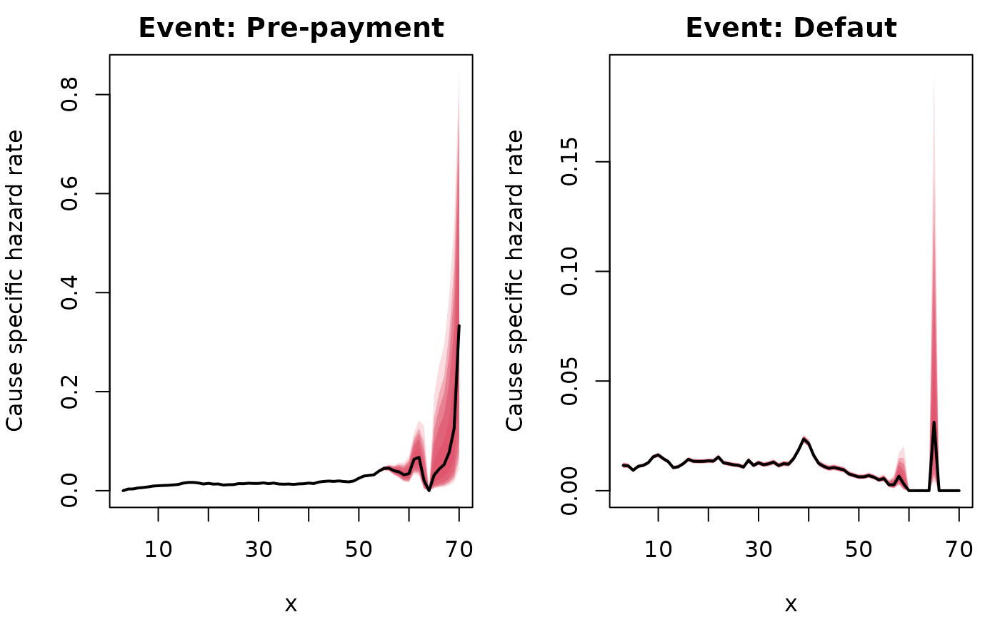
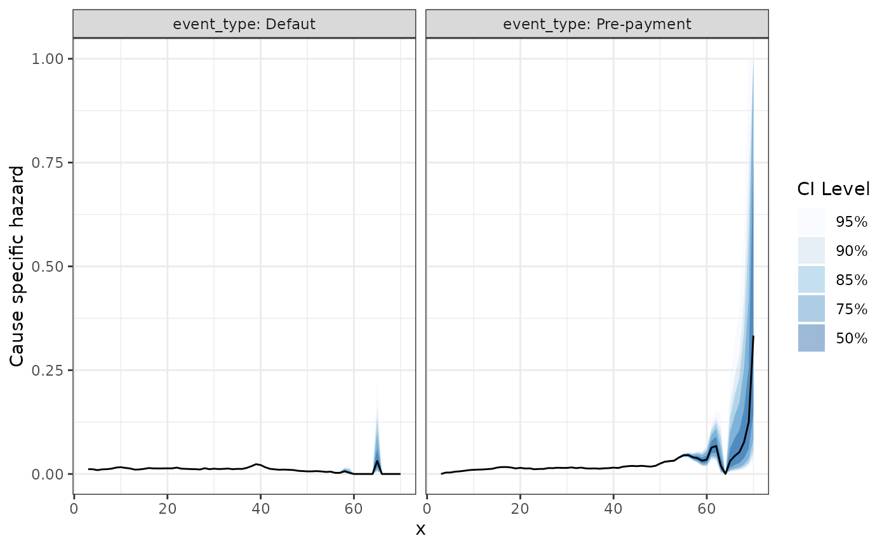

Get Started
get-started.Rmd
library(abslife)
#> Welcome to the abslife package!
#> WARNING: Under construction.
library(ggplot2) ## optionalThis package is currently under construction!
This vignette demonstrates the core functionalities of the
abslife package. abslife provides tools for
estimation of the hazard rate, denoted \(\lambda\), for discrete time-to-event data
subject to left-truncation (Lautier et al. 2023a). The package is designed
so it can additionally handle the following common observational data
challenges:
+ Right-censoring (Lautier et al. 2023b)
+ Competing risks (Lautier et al. 2024)
In all cases, asymptotic confidence intervals for the estimated
hazard rates are readily available. The main function of the package is
the estimate_hazard() function, which adapts to these
scenarios based on the arguments provided.
Now, we provide specific examples with datasets shipped with the package.
Left-truncation
We begin by analyzing the aart dataset. This dataset represents a
scenario involving only left-truncation. It contains two columns:
Xi (time-to-event) and Yi (truncation
time).
data(aart)
head(aart)
#> Xi Yi credit.score interest.rate pti veh.value co.sign new.used
#> 1 39 33 789 0.0290 0.1138 11.09935 0 1
#> 2 39 33 486 0.0499 0.0000 11.03240 0 1
#> 3 40 34 561 0.0250 0.0000 10.37246 0 1
#> 4 39 33 688 0.0259 0.0555 10.69326 0 1
#> 5 34 33 477 0.0490 0.0000 10.59031 0 1
#> 6 35 33 550 0.0239 0.0000 10.39776 0 1
#> subvent.rate subvent.cash veh.pick.up veh.suv
#> 1 0 0 0 1
#> 2 0 1 1 0
#> 3 0 0 1 0
#> 4 0 1 1 0
#> 5 0 1 1 0
#> 6 0 0 1 0We estimate the hazard rate using estimate_hazard().
aart_hazard <- estimate_hazard(lifetime = aart$Xi,
trunc_time = aart$Yi,
ci_level = 0.95,
carry_hazard = TRUE) ## need Note that we set
carry_hazard = TRUE. This argument ensures that if a hazard estimate is 0, it is replaced by the last non-zero estimate.
The function returns a data.frame containing the
evaluation times, the hazard estimates, and the standard errors (on the
log scale). It also includes the lower and upper bounds of the
confidence interval corresponding to the ci_level argument
(in this case, set to 0.95).
tail(aart_hazard)
#> Observed lifetime support: [36, 41]
#> Total number of timepoints observed: 6Summarizing and plotting
For a concise overview of the estimation, use the
summary() method:
summary(aart_hazard)
#> lifetime hazard se_log_hazard lower_ci upper_ci
#> 1 5 0.01538462 0.7126096 0.003850968 0.05940167
#> 6 10 0.02183908 0.2319626 0.013972246 0.03398255
#> 11 15 0.02291826 0.1847030 0.016069256 0.03258974
#> 16 20 0.01963439 0.1875456 0.013677578 0.02811156
#> 21 25 0.02743902 0.1511595 0.020547920 0.03655493
#> 26 30 0.03096539 0.1422477 0.023609106 0.04051868
#> 31 35 0.04223676 0.1212668 0.033602069 0.05296869
#> 36 40 0.95017182 0.1905022 0.929214457 0.96515703To visualize the hazard rate, you can use base R graphics via the
plot() method:
Alternatively, use ggauto() for a
ggplot2-powered visualization. This function is
particularly useful for visualizing multiple confidence levels
simultaneously:

Calculating the CDF
The package can also derive the Cumulative Distribution Function
(CDF) directly from the hazard estimates using calc_cdf().
This appends a cdf column to the results.
aart_cdf <- calc_cdf(aart_hazard)
#> Warning in calc_cdf.alife(aart_hazard): Not reporting CDF (and density) values
#> for time points where the hazard rate equals 1.
summary(aart_cdf)
#> lifetime cdf density
#> 1 5 0.01538462 0.01538462
#> 6 10 0.10437149 0.01999641
#> 11 15 0.20412422 0.01866792
#> 16 20 0.29434160 0.01413266
#> 21 25 0.37520875 0.01762734
#> 26 30 0.45948868 0.01727198
#> 31 35 0.55198866 0.01975702
#> 36 40 0.99215705 0.14955687We can also plot the CDF:
plot(aart_cdf)Right-censoring
The workflow for right-censored data is nearly identical. We will
demonstrate this using the mbalt dataset, which includes a
third column, Di, serving as the right-censoring
indicator.
data(mbalt)
head(mbalt)
#> Zi Yi Di base.resid contract.resid co.lessee credit.score location lease.term
#> 1 37 29 1 24708 30139.20 FALSE 848 NJ 36
#> 2 30 29 1 18701 23466.30 FALSE 739 CA 36
#> 3 37 30 1 35571 36383.20 TRUE 871 NY 36
#> 4 32 32 1 30056 32342.76 TRUE 721 OH 36
#> 5 37 32 1 31489 33854.70 TRUE 738 NJ 36
#> 6 36 33 1 29319 30509.46 FALSE 736 CA 36
#> pti subvented model year manufacturer veh.value
#> 1 0.04355511 cash C300W4 2015 Mercedes-Benz 47090
#> 2 0.06285600 rate CLA250C 2014 Mercedes-Benz 35555
#> 3 0.04434177 none ML350W4 2015 Mercedes-Benz 64120
#> 4 0.04603333 rate ML350W4 2014 Mercedes-Benz 58995
#> 5 0.00514451 rate ML350W4 2015 Mercedes-Benz 60655
#> 6 0.05854000 rate ML350W2 2014 Mercedes-Benz 55600We call estimate_hazard() again, but this time we
provide the censoring argument. This argument accepts a vector where
1 indicates a censored observation and 0
indicates an observed event.
mbalt_hazard <- estimate_hazard(lifetime = mbalt$Zi,
trunc_time = mbalt$Yi,
censoring = 1 - mbalt$Di,
ci_level = 0.95,
carry_hazard = FALSE) ## need The output structure remains consistent with the previous example.
summary(mbalt_hazard)
#> lifetime hazard se_log_hazard lower_ci upper_ci
#> 1 5 0.002508511 0.26759709 0.0014862156 0.004231014
#> 6 10 0.001434226 0.20014358 0.0009692981 0.002121686
#> 11 15 0.001737202 0.14599186 0.0013054782 0.002311367
#> 16 20 0.002970186 0.09727315 0.0024558880 0.003591798
#> 21 25 0.006408331 0.06270123 0.0056714682 0.007240233
#> 26 30 0.022951745 0.03238300 0.0215707217 0.024418979
#> 31 35 0.177075260 0.01673112 0.1723472557 0.181904461The plotting functions also work out of the box:
plot(mbalt_hazard)and, for ggplot2:

Competing risks
Finally, abslife can estimate hazards in the presence of
competing risks. We use the aloans dataset, which contains data on
consumer automobile loans (Lautier et al.
2024).
data(aloans)
head(aloans)
#> risk.cat Z Y C D R bond orig.apr orig.term orig.loan.amt cur.age
#> 1 prime 36 18 0 0 1 aart 0.0704 72 13649.18 17
#> 2 near_prime 60 17 1 0 0 aart 0.1025 72 19999.10 16
#> 3 prime 28 17 0 0 1 aart 0.0694 72 9098.58 16
#> 4 near_prime 33 17 0 0 1 aart 0.1080 72 11723.36 16
#> 5 prime 60 17 1 0 0 aart 0.0869 72 8753.48 16
#> 6 prime 46 17 0 0 1 aart 0.0560 72 22206.59 16
#> cur.balance calc.pmt
#> 1 11448.24 231.5438
#> 2 16143.29 368.4643
#> 3 7600.87 153.9386
#> 4 9665.35 218.9605
#> 5 7515.89 155.0285
#> 6 18458.99 362.4058The relevant columns of the dataset for this example are the following:
Z: time to eventY: left-truncationC: right censoring indicatorD: Default indicator (1 represents default, and 0 represents pre-payment)
The two competing risks in this case are default and pre-payment. To make the results more interpretable, we create a descriptive event_type column.
The package is designed so the workflow is identical as the previous
two examples. The only change here is passing the column discriminating
the event types to the event_type argument in
estimate_hazard().
aloans_hazard <- estimate_hazard(lifetime = aloans$Z,
trunc_time = aloans$Y,
censoring = aloans$C,
event_type = aloans$event_type,
ci_level = 0.95,
carry_hazard = FALSE) ## need
#> Warning in check_censored(lifetime, censoring_indicator, support_lifetime_rv):
#> Warning: Detected censored observations at the maximum limit of the support
#> (lifetime == max(support_lifetime_rv)). This may lead to identifiability issues
#> or unstable hazard estimates at the tail.The output now includes a column specifying the event type for each hazard estimate.
summary(aloans_hazard)
#> event_type lifetime hazard se_log_hazard lower_ci upper_ci
#> 1 Defaut 3 0.011520293 0.06506047 0.010155080 0.013066617
#> 2 Defaut 8 0.012729470 0.03876609 0.011809112 0.013720562
#> 3 Defaut 13 0.010477761 0.04486786 0.009604176 0.011429888
#> 4 Defaut 18 0.013350256 0.04224199 0.012302520 0.014485913
#> 5 Defaut 23 0.012722853 0.04637351 0.011630319 0.013916572
#> 6 Defaut 28 0.013859145 0.04731310 0.012647271 0.015185355
#> 7 Defaut 33 0.013032176 0.05225905 0.011778374 0.014417499
#> 8 Defaut 38 0.018664205 0.04681281 0.017055857 0.020421067
#> 9 Defaut 43 0.011084154 0.06587830 0.009754619 0.012592597
#> 10 Defaut 48 0.007673623 0.08514621 0.006501842 0.009054661
#> 11 Defaut 53 0.006133755 0.10401466 0.005008188 0.007510380
#> 12 Defaut 58 0.006600660 0.50165838 0.002479550 0.017451386
#> 13 Defaut 63 0.000000000 0.00000000 0.000000000 0.000000000
#> 14 Defaut 68 0.000000000 0.00000000 0.000000000 0.000000000
#> 15 Pre-payment 3 0.000000000 0.00000000 0.000000000 0.000000000
#> 16 Pre-payment 8 0.007686787 0.04975978 0.006977496 0.008467566
#> 17 Pre-payment 13 0.011646595 0.04258207 0.010724035 0.012647505
#> 18 Pre-payment 18 0.015630141 0.03908499 0.014494211 0.016853574
#> 19 Pre-payment 23 0.011372231 0.04901653 0.010341306 0.012504631
#> 20 Pre-payment 28 0.015052316 0.04542667 0.013787747 0.016430935
#> 21 Pre-payment 33 0.015385696 0.04815372 0.014019446 0.016882814
#> 22 Pre-payment 38 0.013687084 0.05452748 0.012316859 0.015207396
#> 23 Pre-payment 43 0.018648019 0.05098525 0.016904597 0.020567482
#> 24 Pre-payment 48 0.017776306 0.05622984 0.015950891 0.019806416
#> 25 Pre-payment 53 0.032053819 0.04610587 0.029365598 0.034979259
#> 26 Pre-payment 58 0.037953795 0.21258769 0.025348580 0.056464133
#> 27 Pre-payment 63 0.020408163 1.01036297 0.002867406 0.131138926
#> 28 Pre-payment 68 0.076923077 1.04083300 0.010719623 0.390571292The plotting functions work as in the previous examples, handling the stratification by event type automatically:

The same holds for the ggplot2 powered plots:
